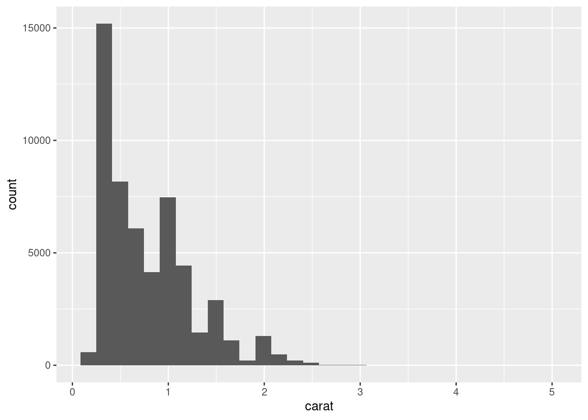
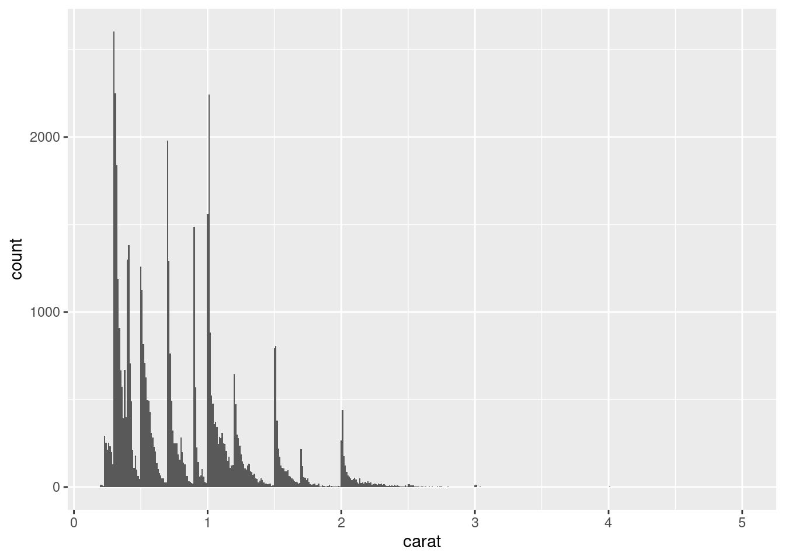
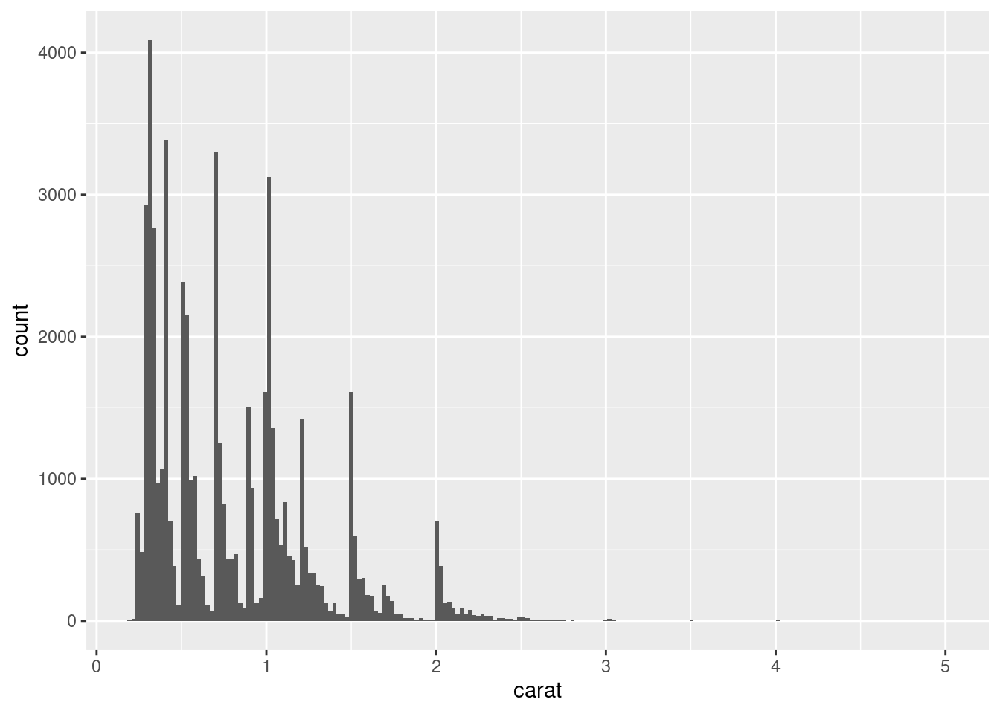

install.packages("tinytex")
tinytex::install_tinytex()Appendix A — Note sur les devoirs et Rmarkdown
Pour les devoirs, veuillez soumettre les rapports en utilisant le fichier Rmarkdown fourni. Le fichier inclue l’énoncé du devoir, les questions et la structure pour intégrer le code R, les sorties R et vos interprétations.
Après avoir modifié et sauvegardé le fichier Rmd, il faut générer le rapport dynamique en format pdf. Pour ce faire, il faut avoir installer une distribution de latex. Le plus simple est d’installer tinytex. Pour ce faire il faut installer l’extension R tinytex et à partir de decette extension installer la distribution latex tinytex.
B Petit guide pour Rmarkdown
B.1 Syntaxe Markdown
Ceci est un petit document qui résume la syntaxe de Markdown
On utilise # (6 max.) pour créer des titres (section) :
### Titre 3
#### Titre 4
#### Titre 5
##### Titre 6
Donne
B.1.1 Titre 3
B.1.1.1 Titre 4
B.1.1.2 Titre 5
B.1.1.2.1 Titre 6
On entoure le texte des symboles * ou _ pour mettre le texte en italique ou en gras. Un symbole pour mettre en italique: *Texte en Italique* Texte en Italique
_Texte en Italique_ Texte en Italique
Deux symboles pour mettre en gras: **Texte gras** Texte gras
__Texte gras__ Texte gras
On utilise une combinaison des 2 charactère pour obtenir du texte gras et italique.
Pour créer un liste on utilise le symbole - suivit d’une espace.
- Il doit y avoir une ligne vide avant la liste.
- On doit ajouter quelques espaces après chaque ligne.
- Pour ajouter des niveau à la liste on indente (tab) 2 fois, puis on ajoute le symbole + suivit d’un espace.
- Ici encore, on doit ajouter quelques espaces après chaque lignes.
- Il doit y avoir une ligne vide après la liste.
On peut aussi créer des liste avec des numéro ou des lettre.
- On doit simplement mettre un point après le chiffre ou la lettre, suivit d’un espace
- Encore une fois, il peut y avoir plusieurs niveaux ii). Mais pas plus de 3 niveau
Pour écrire des équation mathématique, on entoure le texte du symbole $
\(K = 0.5\)
\(\log(x + k)\)
Pour faire un tableau, on fait comme suit (noter que l’alignement des symbole est sans importance) :
colonne 1 |colonne 2|colonne 3|colonne 4
---------|--------|--------|-----------
cellulle | cellulle |cellulle| cellulle
cellulle | cellulle |cellulle| cellulle
cellulle | cellulle |cellulle| cellulleOn peut utiliser le symbole > pour indenter un paragraphe (le résultat est différent entre PDF et HTML) :
En HTML, ça produit un résultat étrange … > mais bon …
On peut écrire dans la même police que celle du code en entourant le texte avec le symbole ` : variable
Si l’on veut utilisé un symbole dans le texte sans qu’il modifie le texte, il faut mettre le symbole \ devant.
Pour inséré un lien, on entoure le texte avec [ ], et on met l’addresse dans des paranthèse () immédiatement à coté: R Markdown
On peut tracer un ligne horizontale en répétant le symbole - 3 fois ou plus :
B.2 À propos de LaTex
Ce qui suit concerne uniquement ceux qui on installer LaTex. Les fonction LaTex serve à modifier le texte, mais ne fonctionne que lorsqu’on produit un document PDF (ça fonctionne peut-être aussi pour les document word). Ils en existe beaucoup trop de fonction pour toutes les énumérer ici. Google est votre ami.
Voici quelques exemple:
\emph{texte italique}
\textcolor{red}{texte rouge}
\texttt{même police que le code de R}Le nom de la prochaine fonction est assez descriptif
\pagebreakB.3 Concernant le code dans notebook
Vous devez écrire le code à l’intérieur de bloc de code, sinon il ne sera pas interpréter comme du code, mais comme du texte. Vous pouvez taper directement la notation pour créer un bloc code ou utiliser les raccourci clavier de RStudio Pour créer un nouveau bloc de code, taper ```{r} pour ouvrir le bloc et ``` pour le fermer. Sinon, appuyer sur Ctrl+Alt+I Dans Rstudio, pour éxécuter le code à l’intérieur d’un bloc appuyer sur Ctrl+Shift+Enter ou cliquer sur le boutton Run (dans le bloc, en haut à droite).
Charger les données et les packages dans le premier bloc de code.
```{r} #ouverture du bloc de code
code
``` #fermeture du bloc codeLorsque vous exécuter du code dans un bloc, le résultat apparait directement en dessous de la du bloc (si votre document est un R Notebook). L’option fig.cap fonctionnement seulement lorsqu’on génère un PDF.
Lorsque vous sauvegarder un notebook, un fichier HTLM contenant le code et les résultats est sauvegarder en même temps. Cliquer sur le bouton Preview ou appuyer sur Ctrl+Shift+K pour voir le fichier HTML.
```{r, fig.cap = "Exemple de graphique tiré du fichier d'aide de la fonction stat_bin"}
ggplot(diamonds, aes(carat)) +
geom_histogram()
ggplot(diamonds, aes(carat)) +
geom_histogram(binwidth = 0.01)
ggplot(diamonds, aes(carat)) +
geom_histogram(bins = 200)
```ggplot(diamonds, aes(carat)) +
geom_histogram()`stat_bin()` using `bins = 30`. Pick better value with `binwidth`.
ggplot(diamonds, aes(carat)) +
geom_histogram(binwidth = 0.01)
ggplot(diamonds, aes(carat)) +
geom_histogram(bins = 200)
C Resources pour en apprendre plus sur rmarkdown
https://statistique-et-logiciel-r.com/guide-de-demarrage-en-r-markdown/
https://rmarkdown.rstudio.com/